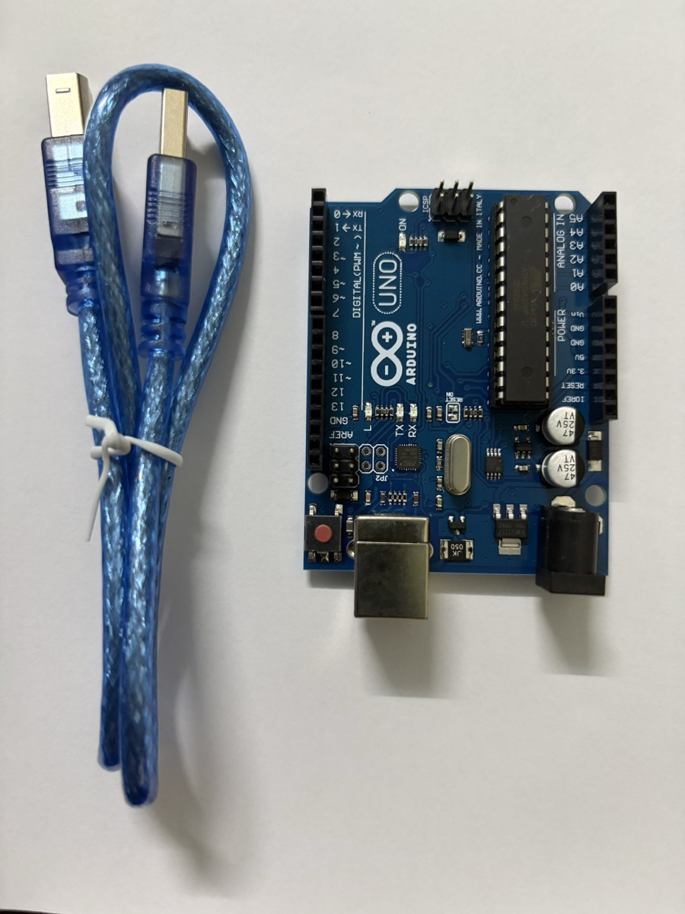
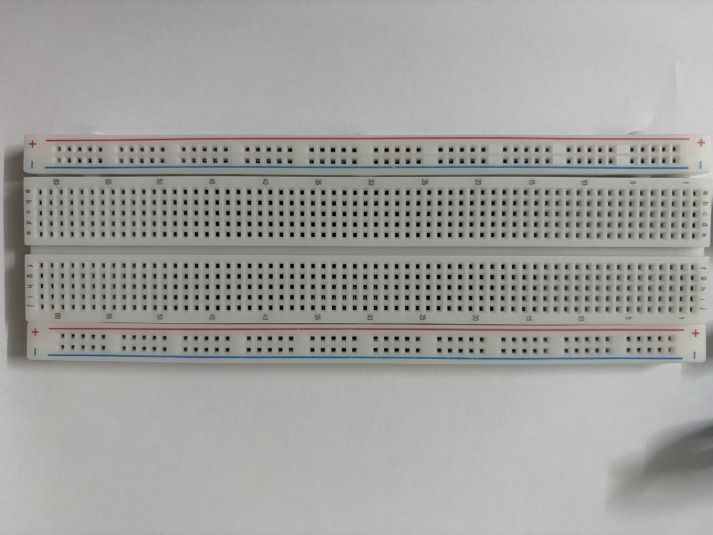
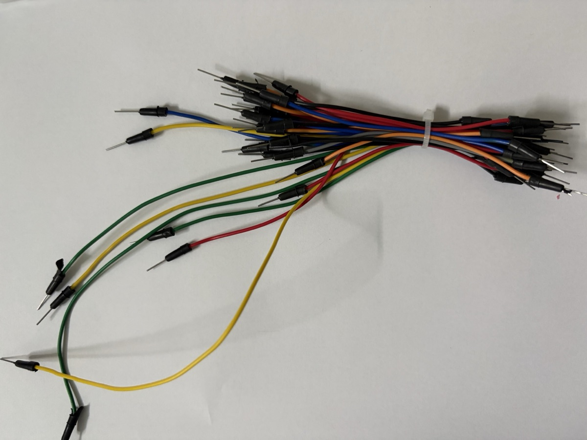
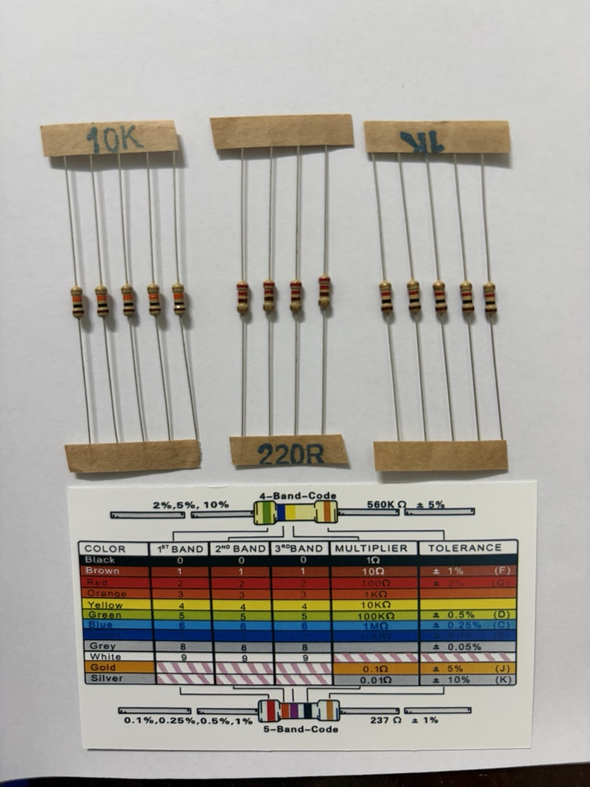
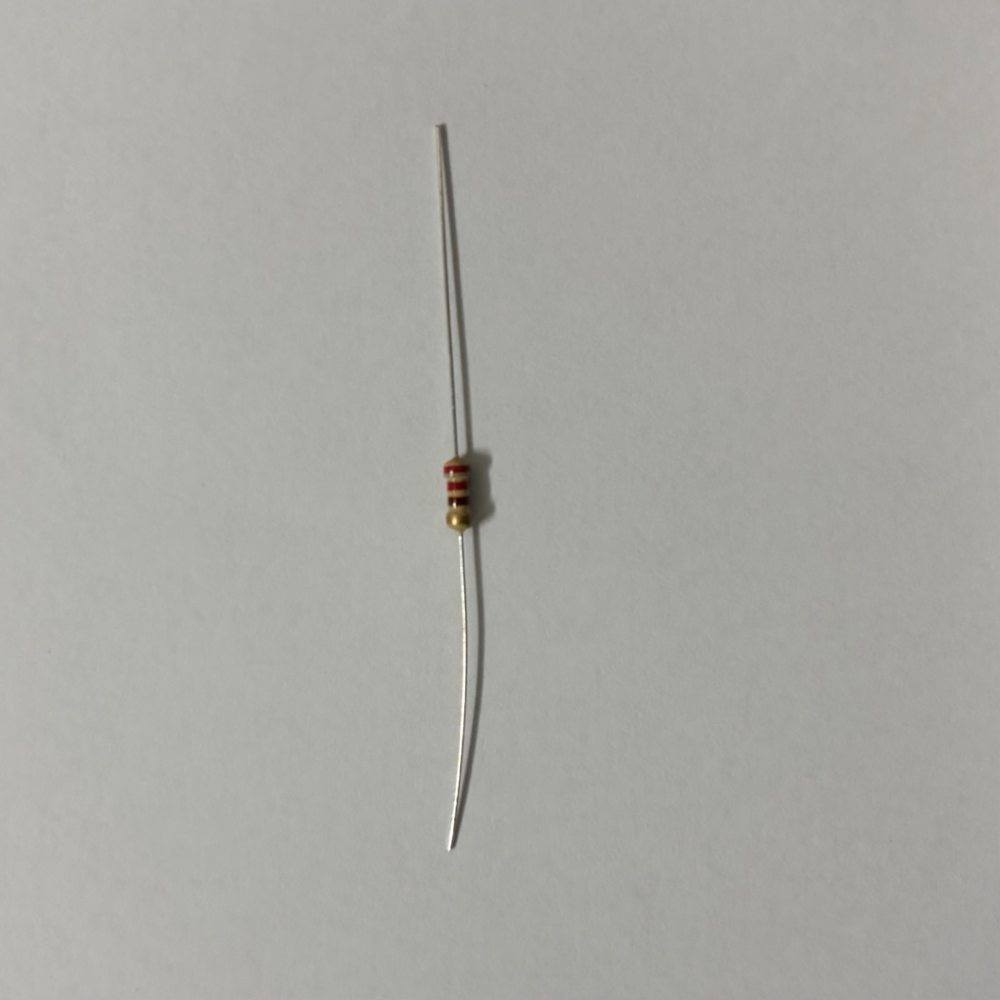
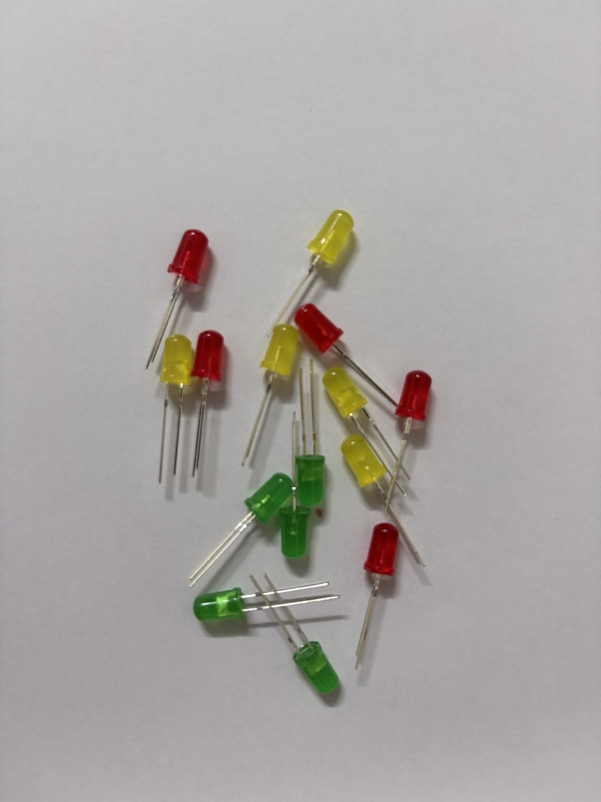
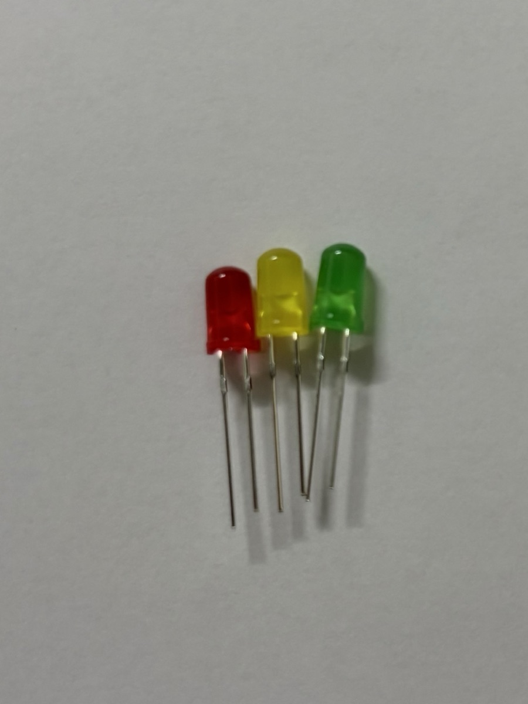
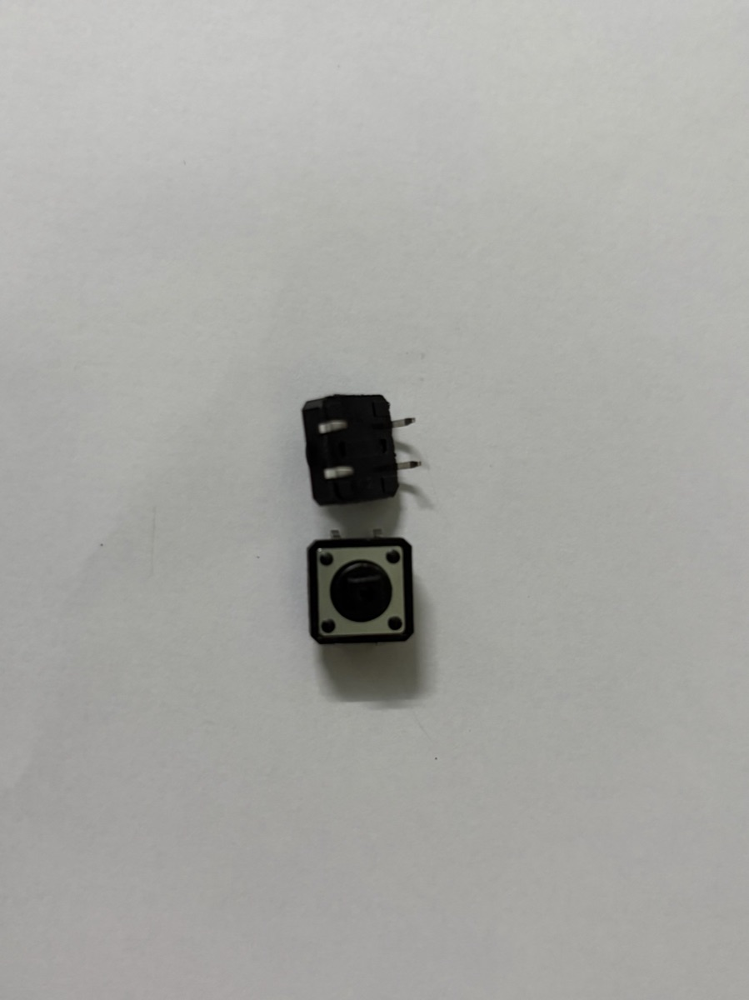

Giới thiệu Arduino & linh kiện cơ bản
Giới thiệu Arduino & linh kiện cơ bản
Note tham khảo về board Arduino Uno và các linh kiện trong bộ kit dùng cho các lab. Ảnh thực tế sẽ được bổ sung dần cho từng linh kiện.
Arduino là gì
Arduino là một nền tảng phần cứng/phần mềm mã nguồn mở gồm hai phần:
- Board vi điều khiển — mạch in có sẵn vi điều khiển, mạch nguồn, cổng USB và các chân I/O cắm được dây trực tiếp. Board phổ biến nhất là Arduino Uno.
- Arduino IDE — môi trường viết code C/C++ (gọi là sketch), biên dịch và nạp xuống board qua USB.
Trong kiến trúc IoT, Arduino nằm ở tầng thiết bị (perception): đọc cảm biến, điều khiển cơ cấu chấp hành. Bản thân Uno không có Wi-Fi/Bluetooth — muốn kết nối mạng phải gắn thêm module (ESP8266, HC-05…) hoặc dùng board có sẵn kết nối như ESP32, Arduino Uno R4 WiFi, Nano 33 IoT.
Cấu trúc một sketch
void setup() {
// chạy 1 lần khi cấp điện hoặc nhấn reset:
// cấu hình chân, khởi tạo Serial, cảm biến...
pinMode(13, OUTPUT);
Serial.begin(9600);
}
void loop() {
// chạy lặp vô hạn sau setup()
digitalWrite(13, HIGH);
delay(500);
digitalWrite(13, LOW);
delay(500);
}Các hàm dùng nhiều nhất:
| Hàm | Ý nghĩa |
|---|---|
pinMode(pin, mode) |
Đặt chân là OUTPUT, INPUT hoặc INPUT_PULLUP |
digitalWrite(pin, HIGH/LOW) |
Xuất mức 5 V / 0 V |
digitalRead(pin) |
Đọc mức logic (HIGH/LOW) |
analogRead(pin) |
Đọc điện áp chân A0–A5, trả về 0–1023 (ADC 10 bit) |
analogWrite(pin, 0–255) |
Xuất PWM trên các chân có dấu ~ |
delay(ms) / millis() |
Dừng chương trình / đọc số ms từ lúc khởi động |
Serial.print() |
Gửi dữ liệu lên máy tính qua Serial Monitor |
Board Arduino Uno
Thông số chính
| Thông số | Giá trị |
|---|---|
| Vi điều khiển | ATmega328P, 16 MHz |
| Mức logic | 5 V |
| Bộ nhớ | Flash 32 KB (0,5 KB bootloader), SRAM 2 KB, EEPROM 1 KB |
| Chân digital | 14 chân (D0–D13), trong đó 6 chân PWM: 3, 5, 6, 9, 10, 11 |
| Chân analog | 6 chân (A0–A5), ADC 10 bit |
| Dòng mỗi chân I/O | Khuyến nghị ≤ 20 mA, tối đa tuyệt đối 40 mA |
| Nguồn cấp | USB 5 V, hoặc jack DC / chân VIN 7–12 V |
Các khu vực trên board
| Khu vực | Mô tả |
|---|---|
| Cổng USB-B | Cấp nguồn 5 V và nạp code, đồng thời là kênh Serial với máy tính |
| Jack nguồn DC | Cấp nguồn ngoài 7–12 V qua bộ ổn áp trên board |
| Nút RESET | Khởi động lại chương trình (chạy lại setup()) |
| Header digital (D0–D13) | I/O số; D0/D1 là RX/TX của Serial — tránh dùng khi đang nạp code/Serial |
| Header analog (A0–A5) | Đọc tín hiệu analog; cũng dùng được như chân digital. A4/A5 là SDA/SCL (I²C) |
| Header nguồn | 5V, 3.3V, GND (nhiều chân), VIN, IOREF, RESET |
| Header ICSP | Nạp trực tiếp cho chip, cũng là đường SPI (MISO/MOSI/SCK) |
| LED trên board | ON (có nguồn), L (nối với D13), TX/RX (nháy khi truyền dữ liệu Serial) |
Ảnh thực tế

Board trong kit là bản Uno R3 tương thích (clone). Một số điểm nhìn thấy trên ảnh:
- Chip ATmega328P dạng DIP 28 chân (con chip đen dài bên phải), cắm trên đế nên tháo thay được nếu lỡ làm hỏng chip.
- Header digital bên trái in sẵn
0 RX,1 TXvà dấu~cạnh các chân PWM3, 5, 6, 9, 10, 11. Hai chânGNDvàAREFnằm ngay sau chân 13. - Bên phải là header ANALOG IN (
A0–A5) và POWER (IOREF,RESET,3.3V,5V,GND,GND,Vin). - Bốn LED nhỏ
ON,L,TX,RXnằm giữa board. Nút RESET màu đỏ ở góc dưới bên trái. - Phía dưới có cổng USB-B (dùng với cáp xanh đi kèm: một đầu USB-A cắm máy tính, một đầu USB-B cắm board) và jack DC. Cạnh jack DC là IC ổn áp AMS1117 hạ áp từ nguồn ngoài xuống 5 V.
Breadboard & dây nối
Breadboard
Bảng cắm thử, không cần hàn. Cấu trúc nối bên trong:
- Hai rail nguồn chạy dọc hai mép (vạch đỏ
+, vạch xanh−): các lỗ trong cùng một rail nối với nhau theo chiều dọc. Thường nối rail+về5V, rail−vềGND. - Vùng giữa: mỗi cột 5 lỗ (a–e hoặc f–j) nối với nhau; hai nửa trên/dưới tách nhau bởi rãnh giữa — rãnh này để cắm IC/nút nhấn bắc ngang.
- Lỗi hay gặp: một số breadboard dài có rail nguồn bị ngắt ở giữa — cần nối cầu nếu dùng cả hai nửa.
Dây nối (jumper wire)
| Loại | Dùng cho |
|---|---|
| Đực – đực (male–male) | Breadboard ↔︎ header Arduino |
| Đực – cái (male–female) | Module cảm biến có chân header đực ↔︎ breadboard |
| Cái – cái (female–female) | Module ↔︎ module, hoặc module ↔︎ chân header đực |
Quy ước màu để dễ dò mạch: đỏ = 5V, đen = GND, các màu khác cho tín hiệu.
Ảnh thực tế

Breadboard trong kit là loại full-size (~830 lỗ). Các cột được đánh số 1 → 60 dọc mép, các hàng được đánh chữ a b c d e (nửa trên) và f g h i j (nửa dưới). Mỗi mép có một cặp rail + (vạch đỏ) / − (vạch xanh). Lỗ trên rail xếp thành từng cụm 5 lỗ để dễ đếm, nhưng vẫn thông nhau theo chiều dài rail. Nên dùng đồng hồ đo kiểm tra lại xem rail có bị ngắt ở giữa board không.

Dây trong kit là loại đực – đực, đủ để nối breadboard với header Arduino. Muốn cắm module cảm biến có chân đực (DHT11, HC-SR04…) trực tiếp bằng dây thì cần mua thêm dây đực – cái. Nếu không, cắm module lên breadboard rồi nối bằng dây đực – đực.
Linh kiện thụ động
Điện trở
Hạn dòng, chia áp, kéo lên/kéo xuống (pull-up/pull-down). Giá trị đọc theo vạch màu:
| Màu | Đen | Nâu | Đỏ | Cam | Vàng | Lục | Lam | Tím | Xám | Trắng |
|---|---|---|---|---|---|---|---|---|---|---|
| Số | 0 | 1 | 2 | 3 | 4 | 5 | 6 | 7 | 8 | 9 |
Với điện trở 4 vạch: vạch 1, vạch 2 = hai chữ số, vạch 3 = số mũ ×10ⁿ, vạch 4 = sai số (nhũ vàng ±5%, nhũ bạc ±10%). Ví dụ: đỏ – đỏ – nâu = 22 × 10¹ = 220 Ω; nâu – đen – đỏ = 10 × 10² = 1 kΩ; nâu – đen – cam = 10 kΩ.
Điện trở không phân cực — cắm chiều nào cũng được.
Biến trở (potentiometer)
Điện trở xoay được, 3 chân: hai chân ngoài nối 5V và GND, chân giữa (wiper) cho điện áp thay đổi 0–5 V → đọc bằng analogRead(). Dùng làm núm chỉnh độ sáng, tốc độ, ngưỡng…
Ảnh thực tế

Kit có ba giá trị điện trở, dán băng giấy ghi sẵn giá trị:
| Nhãn | Vạch màu | Giá trị | Dùng cho |
|---|---|---|---|
| 220R | đỏ – đỏ – nâu – nhũ vàng | 22 × 10¹ = 220 Ω ±5% | Hạn dòng LED, LED sáng rõ (~14 mA) |
| 1K | nâu – đen – đỏ – nhũ vàng | 10 × 10² = 1 kΩ ±5% | Hạn dòng LED, LED sáng dịu (~3 mA), dùng trong Lab 1 |
| 10K | nâu – đen – cam – nhũ vàng | 10 × 10³ = 10 kΩ ±5% | Điện trở kéo cho nút nhấn, cầu chia áp với quang trở |
Thẻ đi kèm vừa có bảng mã 4 vạch (sai số 2%, 5%, 10%), vừa có bảng mã 5 vạch dành cho điện trở chính xác (sai số 0,1–1%). Với loại 5 vạch, ba vạch đầu là chữ số, vạch thứ 4 là hệ số nhân, vạch thứ 5 là sai số. Ví dụ in trên thẻ: đỏ – cam – tím – đen – nâu = 237 × 10⁰ = 237 Ω ±1%.

Mẹo xác định chiều đọc: vạch nhũ vàng/bạc (sai số) luôn nằm ở cuối. Cầm điện trở sao cho vạch nhũ ở bên phải (hoặc phía dưới, như trong ảnh) rồi đọc từ đầu kia.
Linh kiện hiển thị & tín hiệu ra
LED
Diode phát quang, có phân cực: chân dài = anode (+), chân ngắn / mép vát = cathode (−). Luôn mắc nối tiếp điện trở hạn dòng (220 Ω – 1 kΩ với 5 V). Chi tiết tính dòng xem Lab 1.
LED RGB
Ba LED đỏ/lục/lam trong một vỏ, 4 chân. Loại cathode chung nối chân dài về GND; loại anode chung nối chân dài về 5V (khi đó logic bị đảo). Mỗi màu cần một điện trở riêng và một chân PWM để trộn màu.
Buzzer (còi)
- Active buzzer — có mạch dao động bên trong, chỉ cần cấp
HIGHlà kêu (một tần số cố định). - Passive buzzer — cần tín hiệu dao động, dùng
tone(pin, freq)để phát nốt nhạc.
Phân biệt nhanh: active buzzer thường có tem dán và đáy bịt kín; passive lộ mạch xanh ở đáy.
LCD 16×2 (I²C)
Màn hình 2 dòng × 16 ký tự. Bản gắn module I²C (PCF8574) chỉ cần 4 dây: VCC, GND, SDA → A4, SCL → A5. Dùng thư viện LiquidCrystal_I2C; địa chỉ thường là 0x27 hoặc 0x3F. Biến trở xanh trên module chỉnh độ tương phản.
Ảnh thực tế


Kit có LED 5 mm, vỏ mờ (diffused), ba màu đỏ, vàng, xanh lá — đủ để làm mạch đèn giao thông. Điện áp thuận tham khảo: đỏ ~1,8–2,0 V, vàng ~2,0–2,1 V, xanh lá ~2,0–2,2 V (LED xanh lá loại lục vàng như trong ảnh; loại xanh lá sáng thuần có thể lên ~3 V). Vì chênh lệch không nhiều nên dùng chung điện trở 220 Ω hoặc 1 kΩ cho cả ba màu là được.
Khi LED còn mới, chân dài hơn là anode (+). Nếu chân đã bị cắt bằng nhau, nhìn vào trong vỏ: miếng kim loại nhỏ là anode, miếng to hình lá cờ là cathode. Hoặc tìm mép vát phẳng trên vành đế — phía đó là cathode.
📷 Chờ ảnh buzzer / LCD (nếu có trong kit).
Linh kiện đầu vào
Ảnh thực tế

Nút trong kit là loại tactile 12 × 12 mm, 4 chân. Nhìn từ cạnh (con phía trên trong ảnh) thấy hai chân ló ra cùng một phía. Hai chân cùng một mặt bên là hai chân được nối bằng công tắc (chỉ thông khi nhấn). Hai chân nằm đối diện nhau qua thân nút, trên cùng một dải kim loại, thì luôn thông với nhau.
Cách kiểm tra chắc chắn nhất: dùng đồng hồ đo thông mạch. Hoặc cắm nút bắc ngang rãnh giữa breadboard và lấy hai chân chéo nhau — cặp chéo luôn là cặp đi qua công tắc, cắm kiểu gì cũng đúng.
Cảm biến
| Cảm biến | Đo gì | Kiểu tín hiệu | Ghi chú nối dây |
|---|---|---|---|
| Quang trở (LDR) | Cường độ ánh sáng | Analog | Mắc cầu chia áp với điện trở 10 kΩ, điểm giữa vào A0 |
| DHT11 / DHT22 | Nhiệt độ, độ ẩm | Digital (giao thức 1 dây riêng) | Chân DATA vào chân digital, cần pull-up 10 kΩ (module thường có sẵn); thư viện DHT |
| HC-SR04 | Khoảng cách (siêu âm, 2–400 cm) | Digital (độ rộng xung) | TRIG phát xung 10 µs, đo thời gian xung ECHO bằng pulseIn(); khoảng cách = t × 0,034 / 2 (cm) |
| PIR HC-SR501 | Chuyển động người/động vật | Digital | Có 2 biến trở chỉnh độ nhạy và thời gian giữ |
| Cảm biến độ ẩm đất | Độ ẩm đất | Analog / Digital | Module có cả AO và DO (ngưỡng chỉnh bằng biến trở) |
| LM35 / TMP36 | Nhiệt độ | Analog | LM35: 10 mV/°C |
Ảnh thực tế
📷 Chờ ảnh các cảm biến trong kit.
Cơ cấu chấp hành
Servo SG90
Động cơ quay đến góc 0–180°. 3 dây: nâu = GND, đỏ = 5V, cam = tín hiệu (chân PWM). Dùng thư viện Servo: myServo.attach(9); myServo.write(90);.
Động cơ DC & driver
Động cơ DC kéo dòng lớn (vài trăm mA) — không nối trực tiếp vào chân Arduino. Cần mạch driver như L298N hoặc L293D (đảo chiều bằng 2 chân, chỉnh tốc độ bằng PWM), nguồn động cơ tách riêng, chung GND với Arduino.
Relay module
Công tắc điện từ cho phép Arduino đóng/ngắt thiết bị công suất lớn (đèn, quạt 220 V). Đầu điều khiển: VCC, GND, IN; đầu tải: COM, NO (thường hở), NC (thường đóng). Nhiều module kích ở mức LOW. ⚠️ Làm việc với điện 220 V cần hết sức cẩn thận.
Ảnh thực tế
📷 Chờ ảnh servo / relay / motor.
Lưu ý an toàn khi lắp mạch
- Rút USB trước khi thay đổi dây. Cắm nhầm 5V–GND gây ngắn mạch có thể làm hỏng cổng USB máy tính.
- Không kéo quá 20 mA mỗi chân và ~200 mA tổng từ các chân I/O; tải lớn (motor, nhiều LED, servo nhiều cái) dùng nguồn ngoài.
- Mọi thiết bị trong mạch phải chung GND.
- Không cấp quá 5 V vào chân I/O; module 3,3 V (ESP8266, một số cảm biến) cần chuyển mức logic.